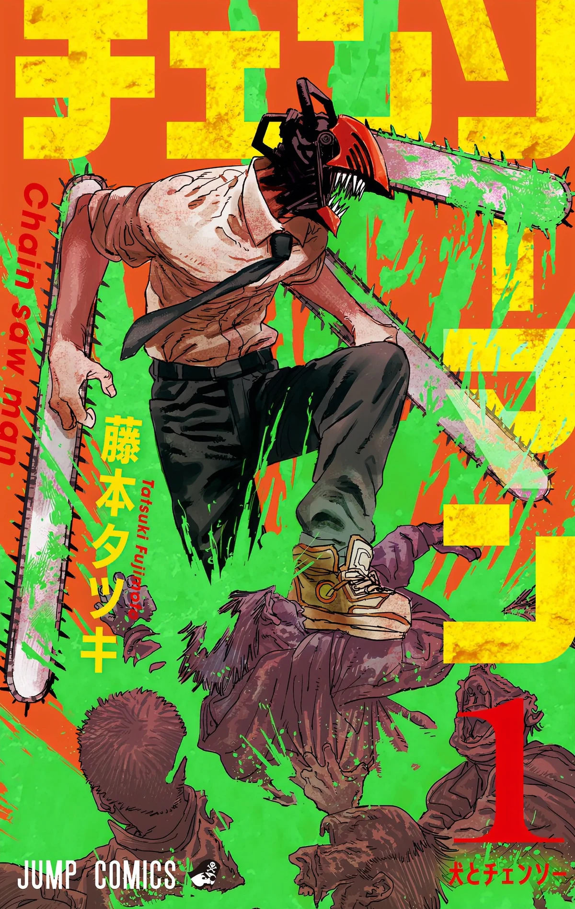
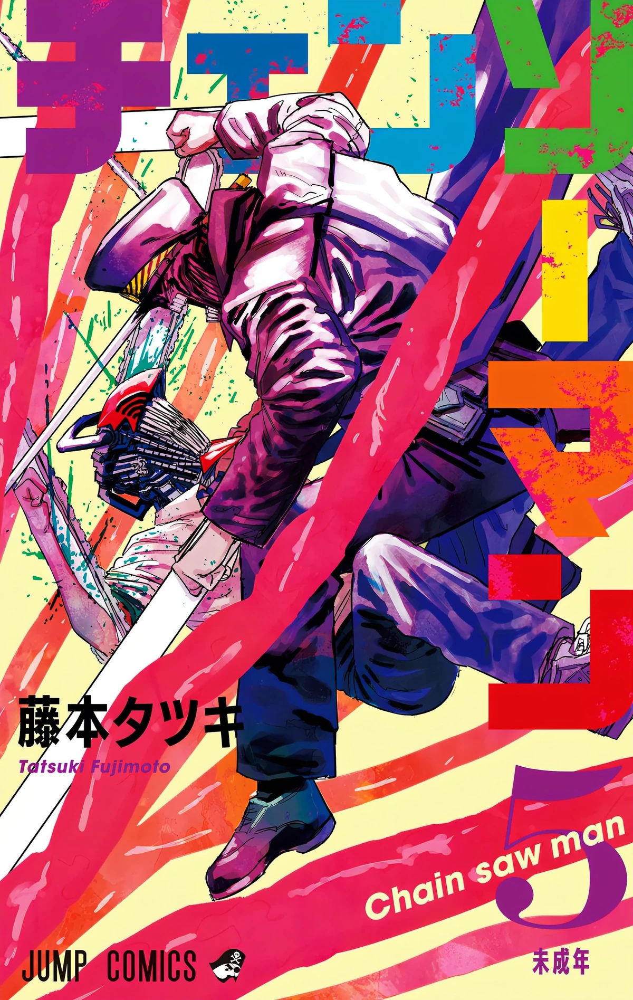
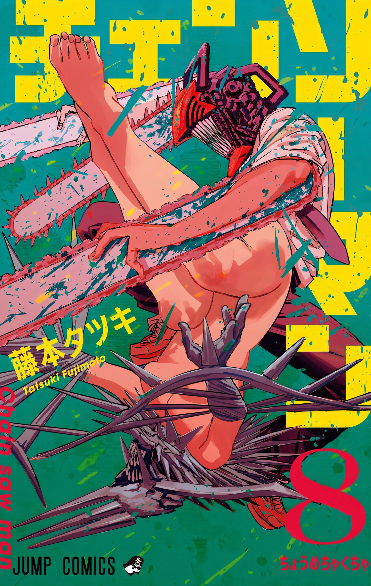
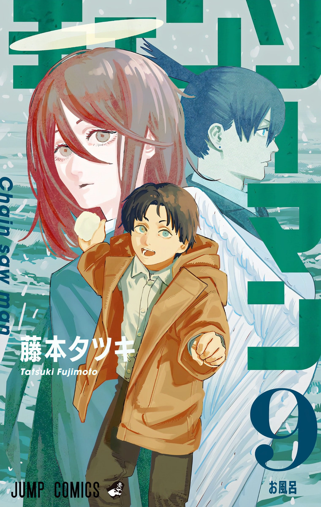
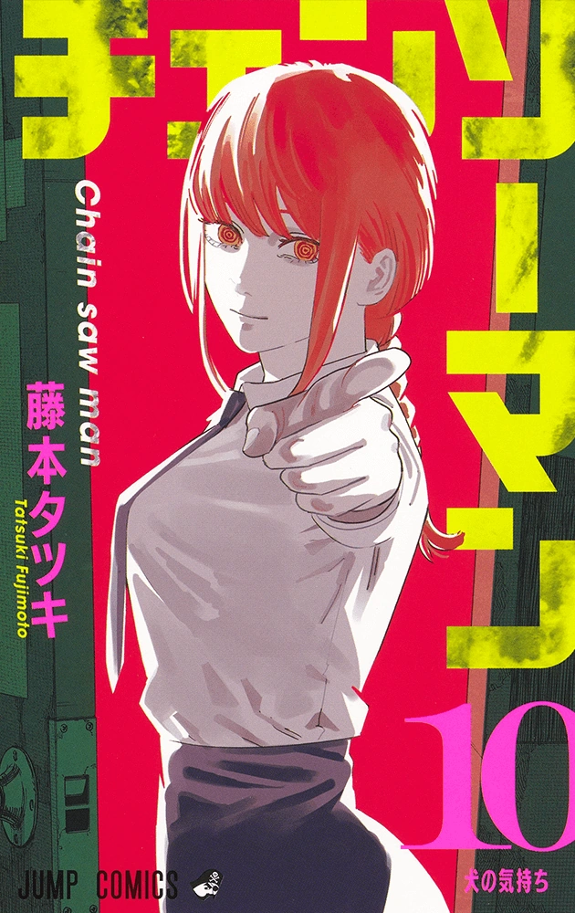

Chainsaw Man es un anime basado en el manga de Tatsuki Fujimoto, que se estrenó en octubre de 2022. La historia sigue a Denji, un joven pobre que trabaja como cazador de demonios para pagar sus deudas. Después de un evento trágico, se fusiona con su demonio mascota, Pochita, y adquiere la habilidad de transformarse en Chainsaw Man, un ser con motosierras en su cuerpo. A partir de ahí, se une a un grupo de cazadores de demonios para luchar contra poderosas criaturas mientras lidia con sus propios deseos y conflictos internos.
Chainsaw Man es un manga de acción y horror creado por Tatsuki Fujimoto que ha cautivado a millones de lectores. Con un estilo visual impactante y una trama llena de giros inesperados, Chainsaw Man combina acción frenética, humor negro y personajes complejos, creando una experiencia de lectura única y adictiva. A continuación los 5 tomos más populares:




